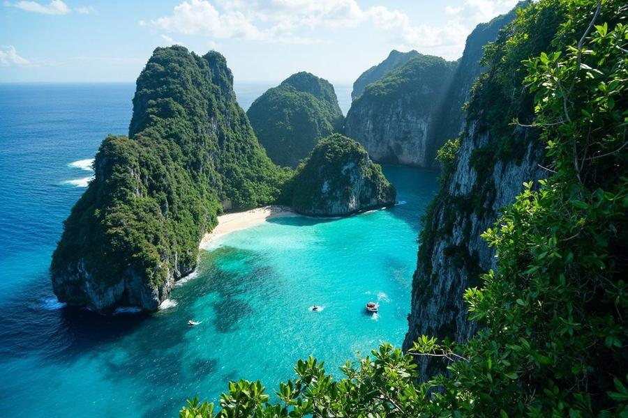

Pintu Gerbang
 Wangi-Wangi
Wangi-Wangi
Wangi-Wangi
Pusat administrasi kabupaten dan pintu masuk utama Wakatobi melalui Bandara Matahora.
JelajahiJelajahi Wangi-Wangi, Kaledupa, Tomia, dan Binongko — gugusan pulau dengan keanekaragaman hayati laut tertinggi di dunia.
Wakatobi adalah kepanjangan dari empat pulau utama: Wangi-Wangi, Kaledupa, Tomia, dan Binongko. Terletak di Provinsi Sulawesi Tenggara, Wakatobi merupakan bagian dari Taman Nasional Laut terbesar di Indonesia dan salah satu destinasi diving terbaik di dunia.
Wangi-Wangi
Pusat administrasi kabupaten dan pintu masuk utama Wakatobi melalui Bandara Matahora.
Jelajahi Kaledupa
Kaledupa
Pusat kebudayaan Suku Bajo dengan benteng kuno Kesultanan Buton dan tenun ikat.
Jelajahi
TomiaLebih dari 20 titik dive kelas dunia dengan visibilitas air hingga 50 meter.
Jelajahi Binongko
Binongko
Pulau Tukang Besi: warisan pandai besi, desa mati, dan mercusuar tua.
JelajahiDengan 750 spesies koral dari 850 spesies yang ada di dunia, Wakatobi menjadi rumah bagi penyu, dugong, dan ratusan spesies ikan tropis.
Tim kami siap membantu Anda merencanakan itinerary, pemesanan, dan informasi dive site terbaik di keempat pulau.